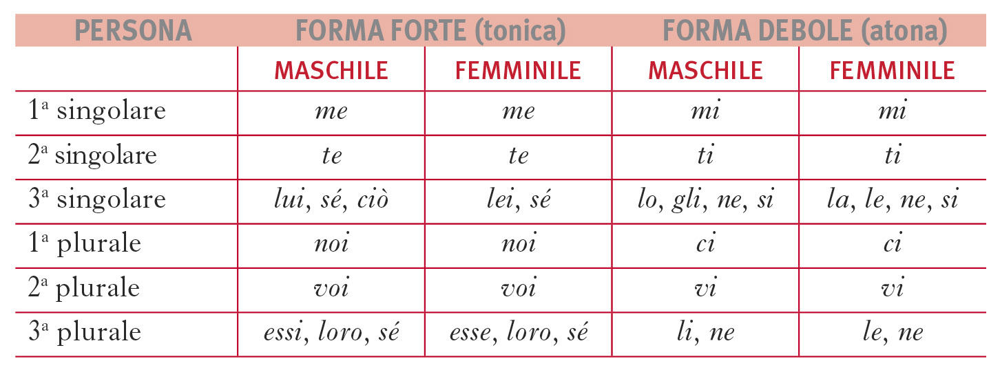
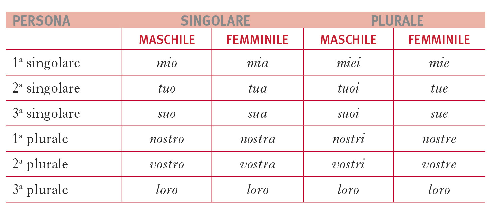

In Italian, every article, noun, adjective and pronoun has a gender attributed to it
There are only two genders in Italian, male and female, and in place of the neutral gender the male one is used
In Italian there are 6 determinative articles and 3 indeterminative articles
The golden rule when it comes to guessing the gender of nouns and adjectives is:
True for most nouns and most adjectives (about 80%)
Not all nouns follow this pattern
There are other ways to tell in advance what the gender of a noun might be
Adjectives can be variable or invariable. There are three classes of variable adjectives.
First class: adjectives that follow the "golden rule", with the male singular form ending in -o
Second class: adjectives that have the male singular form ending in -e
For both the male and female cases, they end in -e at their singular form and in -i in their plural form.
Third class: adjectives that have the male singular form ending in -ista, ‑cida, -ita and -asta
In their singular form they end in -a for both male and female forms, while they end in -i for the m.pl. form and in -e for the f.pl. form.
Invariable adjectives, as the name suggests, do not change based on gender and number
They include:


Some nouns change gender when going from singular to plural
It's always from male singular to female plural
Three main categories of nouns do this: numerable collections, body parts and other miscellaneous
Italian doesn't write stresses on words, with the exception of stresses that fall on the last letter of the word when it's a vowel
In Italian stresses are mobile, so it can fall on different syllables depending on the word
In most words it falls on the second-to-last syllable, but in some cases it falls on the third-to-last or the last one.
There is no precise rule to know beforehand where it falls
Some words completely change meaning based on the stresses, even if they are homographs
Ancora
Àncora: anchor
Ancòra: again
DA COLORARE